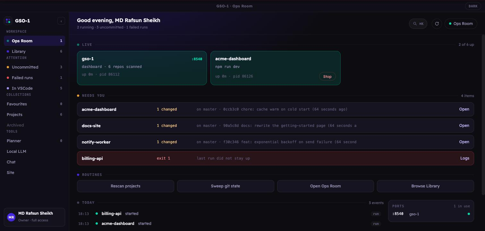

Every project on your machine, in one window — running, healthy, and one click from started.
macOS · Windows · Linux — free and open source, Apache 2.0

You have thirty-odd folders of code. Four are running and you are not sure which four.
One is holding a port hostage. Starting any of them means remembering whether it was
npm run dev, ./run.sh, or that one make serve.
GSO-1 is the window that answers all of it. Point it at your projects folder and it walks every project inside, works out how each one starts, and gives you a row per app with a start button, a live health light, and the git state.
It runs entirely on your machine. It binds to 127.0.0.1,
talks to your filesystem and your processes, and uploads nothing.
Detects the run command for Node, Django, FastAPI, Flask, Streamlit, Rust, Go, static sites, and plain Python — and always defers to a project's own run.sh or Makefile.
Healthy, starting, crashed, or stopped — from process tracking plus a port probe, not from hope.
Finds what is already holding the port before you launch, instead of after the stack trace.
Branch, dirty count, ahead/behind, last commit — across every repo, with fast-forward updates from the dashboard.
Read-only tools run themselves; anything that writes a file or runs a command stops for an explicit approval.
A built-in Anthropic→llama proxy points an agent session at your local llama-server.
| Platform | File |
|---|---|
| macOS (Apple Silicon) | GSO-1-*-arm64.dmg |
| macOS (Intel) | GSO-1-*.dmg |
| Windows | GSO-1-Setup-*.exe |
| Linux | GSO-1-*.AppImage / .deb |
On first run GSO-1 asks which folder holds your projects. That is the whole setup — no Python, no terminal, no config file. Builds are currently unsigned, so macOS and Windows will ask you to allow the app once.
git clone https://github.com/rafsunsheikh/the-manager.git
cd the-manager
cp .env.example .env
./run.shGSO-1 starts processes and runs commands as you. That is the feature, and it is also the threat model. It binds loopback only by default, refuses remote access outright unless you set a token, and requires explicit approval for agent writes and commands.
Full detail in the security policy.